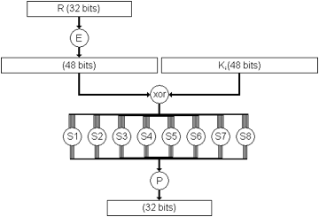

| เนื้อหา 2. การเข้ารหัสในยุค Modern | |
| 2.1 DES (Data Encryption Standard) 2.2 Triple-DES (3DES) 2.3 AES (Advance Encryption Standard) |
|
2. การเข้ารหัสในยุค Modern
2.1 DES (Data Encryption Standard)
DES เป็นการเข้ารหัสแบบ Block cipher ที่พัฒนามาจากอัลกอริทึม Lucifer ของ IBM โดย Lucifer ได้รับการพัฒนาเพิ่มความสามารถและเปลี่ยนชื่อเป็น DES แล้วได้รับการนำเสนอต่อ US NIST (US National Institute of Standards and Technology) ให้กลายเป็นมาตรฐานของการเข้ารหัส
การเข้ารหัสข้อมูลแบบ DES เป็นการเข้ารหัสโดยกระทำกับกลุ่มของข้อมูลขนาด 64 บิต ลำดับแรกข้อมูล 64 บิตนี้จะถูกสลับตำแหน่ง (สลับบิต) จากนั้นจะถูกแบ่งเป็น 2 ส่วนได้แก่ส่วนทางซ้ายและส่วนทางขวา (ส่วนละ 32 บิต) ขั้นตอนต่อไปจะใช้ฟังก์ชั่นทางคณิตศาสตร์ (ฟังก์ชั่น f) ข้อมูลจากส่วนซ้ายหรือขวาจะถูกนำมารวมกันกับ Key โดยจะทำซ้ำกันอย่างนี้เป็นจำนวนทั้งสิ้น 16 รอบ เมื่อเสร็จสิ้นขั้นตอนนี้ (รอบที่ 16) ผลลัพธ์ที่ได้จากทั้งส่วนทางซ้ายและขวาก็จะถูกนำมารวมกันเป็นข้อมูลขนาด 64 บิตอีกครั้งหนึ่ง และนำไปสลับตำแหน่งในขั้นตอนสุดท้าย
รูปภาพ กระบวนการทำงานของ DES
การทำงานของฟังก์ชั่น f ในแต่ละรอบ จะเป็นการเลื่อนบิตของ Key ซึ่งจะเลือกใช้เพียง 48 บิตจากทั้งสิ้น 56 บิต ข้อมูลในส่วนทางขวา (32 บิต) จะถูกขยายให้กลายเป็นข้อมูลขนาด48 บิต
จากนั้นจะนำมารวมกับกุญแจขนาด 48 บิต (ที่เลือกมา) การรวมกันในขั้นตอนนี้จะใช้การ XOR ผลลัพธ์ขนาด 48 บิตที่ได้จะถูกนำไปทำการแทนที่อีก 8 ครั้ง ผลลัพธ์จากการแทนที่จะเหลือข้อมูลเพียง 32 บิตเท่านั้น หลังจากนั้นก็จะต้องทำการสลับตำแหน่งกันอีกครั้ง
หนึ่งรอบของการทำฟังก์ชั่น f จะประกอบด้วยขบวนการข้างต้น 4 ครั้ง ข้อมูลในส่วนทางซ้ายจะต้องผ่านขบวนการเดียวกัน ผลลัพธ์ที่ได้จากทั้งส่วนทางซ้ายและขวาจะถูกนำมารวมกันแบบ XOR เมื่อเสร็จสิ้นขั้นตอนนี้แล้ว ผลลัพธ์ที่ได้จะถูกใช้เป็นข้อมูลส่วนทางขวาของรอบใหม่ และข้อมูลของส่วนทางขวาเดิมก็จะกลายเป็นข้อมูลส่วนซ้ายของวงรอบใหม่

รูปภาพ การทำงานของฟังก์ชั่น f ของ DES
บริษัทแห่งหนึ่งต้องการเบรค DES เพื่อสร้างความแข็งแกร่งให้กับ RSA จึงจัดให้มีการประกวดการเบรคขึ้นโดยให้รางวัล 10,000 US$ สำหรับผู้ชนะในแต่ละรอบ
- บริษัท Distribution.net ใช้เวลา 41 วันก็ทำการเบรค DES ได้สำเร็จ
- บริษัท EFF สามารถ เบรค ได้ภายในเวลา 56 ชั่วโมง
Distribution.net และบริษัท EFF ก็จับมือกันและใช้คอมพิวเตอร์กว่า 100,000 เครื่องทั่วโลกมาแคร็ก DES ซึ่งก็สามารถทำได้ ในเวลา 22 ชั่วโมง 15 นาที จึงเป็นต้นเหตุทำให้มีการขยาย Key ของ DES จาก 64 Bit ให้เป็น 128 Bit เพื่อจะได้ใช้เวลาในการแคร็กนานขึ้น
ปัจจุบัน DES แบ่งออกเป็น DES 64 Bit และ DES 128 Bit แต่ถึงแม้ว่าจะใช้ 128 bit ก็ตาม DES ก็ยังสามารถถูกแคร็กได้ จึงได้มีการพัฒนาให้มี Triple-DES (3DES) ที่มีความปลอดภัยสูงขึ้น

2.2 Triple-DES (3DES)
Triple-DES เป็นการเข้ารหัสที่ถูกสร้างมาเพื่อแก้ปัญหาความอ่อนแอของ DES โดย Triple-DES จะช่วยเสริมความปลอดภัยให้การเข้ารหัสมีปลอดภัยมากขึ้น โดยการใช้อัลกอริทึม DES เป็นจำนวนสามครั้งเพื่อทำการเข้ารหัส โดยในแต่ละครั้งจะใช้กุญแจในการเข้ารหัสที่แตกต่างกันออกไป ดังนั้นจำนวนกุญแจที่ใช้ใน Triple-DES จึงมีทั้งสิ้น 3 ดอก (ความยาวดอกละ 56 บิต) ด้วยความแข็งแกร่งนี้จึงทำให้ Triple-DES เป็นอีกหนึ่งในมาตรฐานในการเข้ารหัสในปัจจุบัน
รูปภาพ กระบวนการทำงานของ Tripple-DES

2.3 AES (Advance Encryption Standard)
AES (Advance Encryption Standard) เป็นการเข้ารหัสที่พัฒนาขึ้นมาเพื่อใช้ทดแทน DES หลังจากที่ DES ถูกเบรคได้โครงการพัฒนา AES ได้เริ่มต้นเมื่อปี 1997 โดย NIST หลังจากนั้น (ในปี 1998) NIST ก็ให้นักวิทยาการหัสลับทั่วโลกส่งอัลกอริทึมเข้ามาเพื่อคัดเลือกโดยกำหนดให้ 128 Bit เป็นมาตรฐานของ และ 256 Bit
อัลกอริทึมต่าง ๆ ถูกคัดเลือกเข้ามาทั้งสิ้น 15 อัลกอริทึม และมีอยู่ 5 อัลกอริทึมที่ผ่านเข้ารอบชิง จนผลสุดท้ายอัลกอริทึมของ Rijndael ได้รับการตัดสินให้ชนะเพราะเร็วกว่าและใช้อัลกอริทึมที่ธรรมดากว่า แต่ได้ความปลอดภัยเท่ากัน จากนั้นจึงได้กลายเป็น RFC 3826 เมื่อปี 2004 ข้อกำหนดในมาตรฐานล่าสุดอนุญาตให้ใช้ AES เข้ารหัสข้อมูลโดยใช้ Key ที่มีขนาดต่าง ๆ ได้ ซึ่งได้แก่ 128 Bit, 192 Bit และ 256 Bit
วงรอบการทำงานของ AES แบ่งเป็น 3 ส่วนหลัก ๆ ได้แก่ Initial Round, Rounds และ Final Round และในแต่ละส่วนก็มีกระบวนการย่อยต่าง ๆ ดังนี้
(1) Initial Round
- AddRoundKey
(2) Rounds
- SubBytes: เป็น non-linear substitution ซึ่งแต่ละไบต์จะถูกแทนที่ด้วยไบต์ที่ได้จาก lookup table
- ShiftRows: เป็นการเลื่อนไบต์ในแต่ละแถว ซึ่งจะทำเฉพาะแถวที่ 2, 3 และ 4
- MixColumns: เป็นการผสมรวม 4 ไบต์ภายในคอมลัมน์
- AddRoundKey เป็นการนำ Cipher Text และ Key (ที่มาจาก key schedule) ผสมรวมกลายเป็น Cipher Text ใหม่
(3) Final Round (no MixColumns)
- SubBytes
- ShiftRows
- AddRoundKey
รูปภาพ กระบวนการ SubBytes, ShiftRows, MixColumns และ AddRoundKey
รูปภาพ วงรอบการทำงานของ AES